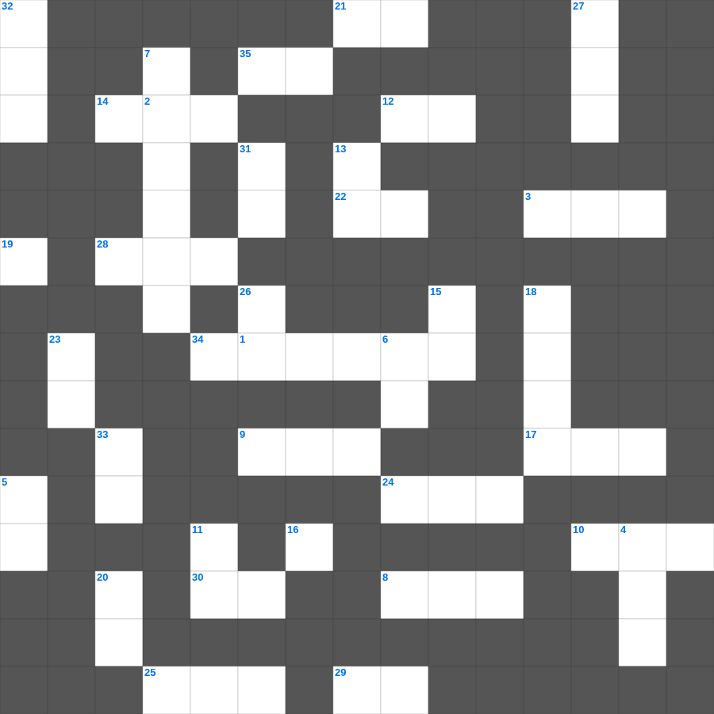

열왕기상 마스터 100
📌 서비스 정의
십자가로세로는 교회 주보와 주일학교에서 사용할 수 있는 성경 기반 가로세로 퍼즐 서비스입니다. 성경 인물, 사건, 핵심 구절을 바탕으로 제작되었습니다. 온라인 풀이 및 인쇄 기능을 제공합니다.
📖 열왕기상란?
열왕기상은 솔로몬의 즉위와 성전 건축, 그의 지혜와 영광, 그리고 이스라엘이 남유다와 북이스라엘로 분열되는 과정을 기록합니다.
📚 열왕기상의 주요 사건·주제
솔로몬의 지혜 구함 · 성전 건축 · 왕국의 분열 · 엘리야와 갈멜산 대결 · 갈멜산 이후 엘리야의 사역
열왕기상의 말씀을 퀴즈로 배우는 열왕기상 성경 퀴즈 문제입니다. 가로 힌트와 세로 힌트를 보고 35개의 단어를 맞춰보세요. 인쇄도 가능하고 정답 확인도 바로 되니 소그룹 모임이나 가정 예배 시간에도 활용하실 수 있습니다.

📝 가로 힌트
1. 여호와께서 호세아에게 이르시되 너는 가서 음란한 여자를 맞이하여 이것들을 낳으라
2. 주께서 네 심령에 함께 계시기를 바라노니 이것이 너희와 함께 있을지어다
3. 그들은 오래 황폐하였던 곳을 다시 쌓을 것이며 옛부터 이것된 곳을 다시 일으킬 것이며
8. 우리는 그가 만드신 바라 그리스도 예수 안에서 이것을 위하여 지으심을 받은 자니
9. 에베소서를 전달한 신실한 일꾼이자 바울의 사랑을 받는 형제
10. 웃시야가 제사장의 직분을 침범했을 때 그를 막은 제사장 수
12. 죄인은 백 번이나 악을 행하고도 장수하거니와 내가 아노니 하나님을 이것하는 자들은 잘 될 것이요
14. 끝으로 나의 형제들아 주 안에서 기뻐하라 너희에게 이것 말을 쓰는 것이 내게는 수고로움이 없고 너희에게는 안전하니라
17. 우리를 거스르고 불리하게 하는 법조문으로 쓴 증서를 지우시고 제하여 버리사 이것에 못 박으시고
19. 네 마음이 원하는 길들과 네 이것이 보는 대로 행하라
21. 부림절의 이름 '부르'의 뜻
22. 각각 자기 일을 돌볼뿐더러 또한 각각 다른 사람들의 일을 돌보아 나의 이것을 충만하게 하라
24. 이스라엘이 원망하여 '이것이 없도다, 물도 없도다' 한 것
25. 진 끝에 불이 붙어 붙여진 지명
28. 아달랴의 칼날을 피해 살아남아 7세에 왕이 된 자
29. 무엇을 하든지 말에나 일에나 다 주 예수의 이름으로 하고 그를 힘입어 하나님 아버지께 이것하라
30. 야고보서 2장 19절: 네가 하나님은 한 분이신 줄을 믿느냐 잘하는도다 이것들도 믿고 떠느니라
34. 우리가 이것으로 의롭다 하심을 받았으니 우리 주 예수 그리스도로 말미암아 하나님과 화평을 누리자
35. 그는 교만하여 아무것도 알지 못하고 변론과 이것을 좋아하는 자니
📝 세로 힌트
4. 느헤미야서의 전체 장수
5. 네 이는 목욕장 위에서 나오는 털 깎인 이것 떼 같구나
6. 진리가 너희를 이것케 하리라
7. 부정을 씻는 물을 만들기 위해 태운 짐승
11. 하만이 왕의 질문에 자기 자신인 줄 알고 대답한 것
13. 대제사장이 이것하기까지 도피성에 머물러야 함
15. 일곱째 날에 하나님이 하신 일
16. 도피성은 요단 이쪽과 저쪽에 각각 몇 개씩인가
18. 이십 세 이상 남자의 총합 '육십만 삼천 이것명'
20. 하나님이 이 모든 일로 말미암아 너를 이것 하실 줄 알라
23. 슬로브핫의 딸들이 기업을 받을 때 조건 '자기 이것 지파에게만 시집갈 것'
26. 주 안에서 유오디아와 순두게에게 권한 것: 같은 이것을 품으라
27. 레위인의 기업은 오직 이것이심이라
31. 아무에게서든지 음식을 이것이 먹지 않고 오직 수고하고 애써 밤낮으로 일함은
32. 너희가 자유를 위하여 부르심을 입었으나 그 자유로 육체의 기회를 삼지 말고 오직 사랑으로 서로 이것 하라
33. 죄인 중에 내가 이것니라
📖 함께 읽으면 좋은 성경사전
퍼즐을 풀기 전에 읽으면 힌트가 쉬워지고, 풀고 나서 읽으면 내용을 한 번 더 복습할 수 있습니다.
🧩 이 퍼즐에서 배우는 내용
이 퍼즐은 열왕기상 마스터 100의 핵심 단어와 개념을 자연스럽게 복습할 수 있도록 구성되었습니다. 주일학교 수업이나 개인 성경공부에서 학습 내용을 점검하는 용도로 바로 활용할 수 있습니다.
🧑🏫 교회 교육 자료 활용
이 퍼즐은 주일학교 교재 추천 자료로 활용할 수 있고, 주일학교 주보에 넣기 좋은 분량으로 구성되어 있습니다. 수업용 주일학교 교안에 활동지로 붙이거나, 예배 후 복습용 주일학교 공과교재로 바로 사용할 수 있습니다.
🏷️ 키워드
열왕기상 성경 퀴즈 문제, 열왕기상, 십자가로세로, 성경퀴즈, 말씀퀴즈, 가로세로퍼즐, 주일학교 교재 추천, 주일학교 주보, 주일학교 교안, 주일학교 공과교재